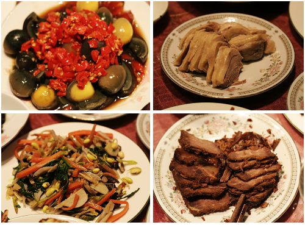
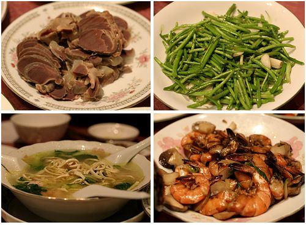
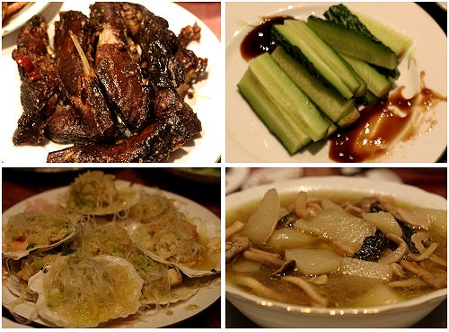
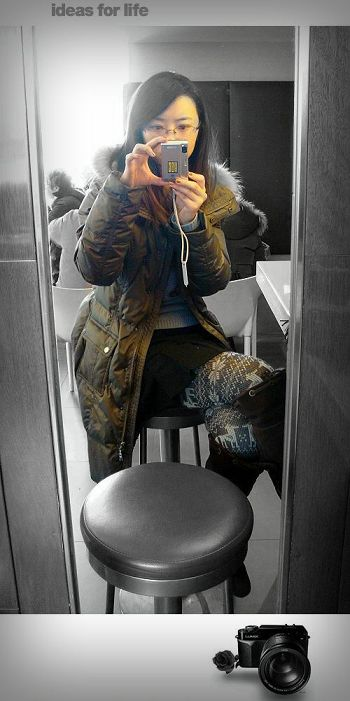

两个人的相机日志：立春 @ Feb 04, 2009


新年.礼物 @ Feb 03, 2009
去年过年给自己买块手表；
今年......给自己换了个新手机作为新年礼物。


相机写的早晨日记 @ Feb 03, 2009
春节期间捧着一月份的《心理月刊》阅读，发现一篇有意思的文章，写两个好友用相机记录彼此的早晨，一个是设计师，另一个是记录片的导演，分别居住在上海和北京。这两位想象力丰富的体验者，她们的照片里隐藏着许多从相片延伸出来的空间和故事，这些故事和她们的过去、当下和对未来的期望产生了某种联系。比如经常出现的一只叫左门卫的猫，那是她们从10年前就开始一起养的猫，又比如一位被记录片导演想象成花婆婆的老人，你会发现导演住所周围有各种老人，还有从拥挤空间里挣扎出的小草小花，她把它们想成一个童话，就好象我们小的时候能把一小片丛林想象成大森林一样......
两个女子进行这个体验，因为觉得有意思，还因为她们隐隐感觉到画面的内容会和自己的过去产生某种连接。3个星期，她们每天晚上都会通过MSN交换彼此的早晨日记，并给对方写一句话，让对方通过照片感受到自己的生活。设计师说自己是一个早晨从中午开始的人，所以，为了这次影象的体验更接近内心，不带一丝辛苦和束缚感，早晨的概念变得广泛----你睁开眼的那段时间，也就是这一天最初的一两个小时。
记录片导演说：“在这段短暂的时光里，我们有那么几秒钟甚至很短也许是几分之几秒，我们全然忘记自己几岁，身处何方，忘了昨天做了什么没做什么，今天还要继续努力做些什么放弃什么。我们全然地享受现在这一秒钟，而不再寻寻觅觅，不再凄凄切切。......”
你会说哦，我讨厌下雨，它让我去往公司的路途充满泥泞。
哦，我今年已经29岁了。
哦，昨天晚上老板那句话到底有何弦外之意呢。
哦，我今天要如何去获取那个女孩的欢心。
其实我们并非讨厌雨，在乎年龄，造作地去避免别人对我们的偏见，或者刻意地去做些事情来获得他人的好感，这些并非我们的真心本性。不信？感觉一下早晨，并将早晨的感觉扩延。
设计师说：“......也许我们原来并不知道自己的内心是什么样子的，但是通过照片，我们也许更容易看清自己，以内为我们是在拍摄自己内心的世界。‘泥上偶尔留指爪，鸿飞哪复计东西’，人的生命转瞬即逝，而生活将一往无前；如果哪天人都已垂垂老去，我想镜头留住的不仅是一个生活的残影，还有隐藏于镜头后的心情。
相机为什么存在？时间会抹煞部分记忆，这个时候我们发明了相机；当我们需要感受他人生活之时，我们发明了相机。但有时候，为了更好地生活，不仅需要记录真实的感受，还需要知道如何遗忘。我们按下快门，我们记录，我们销毁，什么选择都可以，只要能够有助于我们健康地生活。”
她们的体验启发了我，觉得非常有意思！于是，邀请苏州的薇安一起尝试，她欣然答应，让我好不开心。起初想在茶上登一个邀约，可是担心心理、审美的差异，会让第一次体验落败而终。思来想去，想到了薇安，一个通过BLOG认识的女孩，从未谋面，只是相互看对方的文字和相片，蛮欣赏她拍摄的视角。如此，我们真的可以通过相片去了解和感受未知的生活空间。呵呵，约好明天开始，以为明天是立春，结果今天已是立春了，不遗憾不遗憾，重要的是我们共同做的这件事情。但是，考虑到我们都是坐班制的工作，早晨实在有些匆忙，我们将记录改成中午，对于一个上班族来说，中午就象是一段行程中休息喘息的停靠站，短暂的放松，放眼四周的时间。体验从明天开始到10号结束，希望彼此能发现生活里那些动容之处，那些被忽略了的细节，留下心情的记忆！enjoy~
没有兑现的承诺 @ Feb 03, 2009
这则小文让我想起以前很多那些没有兑现的承诺，并不是有关人生、命运的承诺，而是些非常小非常小，小到芝麻那么点儿的承诺，这些小芝麻堆积成一个大大的失望，乃至绝望。此后，不要听对方说什么，而是逐渐学会观察对方究竟做了什么。

混.沌 @ Jan 31, 2009
我不知道自己想要什么，但知道自己不要什么。--《情遇巴塞罗娜》台词
这句台词曾经听一个人说过，在N年前......我的记忆还不曾那么的衰退哦~
说实话，看完这部片子真有些混沌，虽能理解片中人物的感情方式，但离自己的生活实在太遥远，在现实生活中也不靠谱。现在终于理解某些艺术工作者最后为什么疯，或者为什么能那么不着边际。激情足够吸引人，但激情也可以令人自我毁灭，如果你曾经激情过疯狂过沉沦过毫无头绪过，如果你还能继续活着，那么还是应该庆幸的。直到现在，理智还无法让我们避免激情之中的折磨，爱情是一场战争。
做一个普通人 @ Jan 29, 2009
年前，min发给我有关热巧克力的PPS文件。过了好几天我才打开看，看完后感触很深，可能大多数人会在意杯子好不好看，而忽略了杯子里面的热巧克力，生活亦如此。二十几岁的时候我还是很虚荣的，注重形式，忽略了生活真正的意义......现在感悟到，还不算太晚。
从“农妇的自然生活”看到这段：真正的快乐，不是狂喜，亦不是苦痛，在我很主观的来说，它是细水长流，碧海无波，在芸芸众生里做一个普通的人，享受生命一刹间的喜悦，那么我们即使不死，也在天堂里了。
与此时的我产生强烈的共鸣，这正是我可以越来越“看淡外在”的主要原因。
相思.病 @ Jan 28, 2009
小区里有只母狗发情了，luke和这只浑身雪白的萨摩耶（暂叫“小白”）玩耍过几次，这段时期遇到更是让luke疯子一般追逐在小白左右，情不得已。
最深受其苦的是我。
之前都是我起床后luke才会从窝里坐起来，伸长脖子拉一拉筋骨，走出窝外伸个懒腰，抖一抖浑身的毛。现在只要天一亮，它就开始哼哼唧唧，等我下床它便把我往门口引，急着要出去。出去散步，东张西望的，魂不守舍。回来，继续哼哼唧唧，上午、下午例行睡觉也没有了，在房间里转悠，闹腾得人不能安宁。半夜，坐在阳台上往下张望，发呆。
动物会爱彼此吗？会对异性有感情存在吗？
对此，我仍然是悲观的。
与其说是相思病，不如说是被欲望折腾成这副死样儿。
欲望一旦解决了，终点又回到起点，周而复始。
象极了人类。

年年有今朝 @ Jan 28, 2009
全家人聚集在姐姐家吃的年夜饭，这是她做的部分菜肴。年龄越大越没有过年的感觉，过年就是意味着可以休息好多天，我都不知道自己为什么现在变得那么“宅”？哪儿也没兴趣，只想呆在家里做喜欢做的事情，当然这种喜欢并不是厌世的隐退。由此，舌头僵硬了，思维却依然活跃着，没日没夜......



这就是年夜饭的大厨--俺姐姐。她那天晚上吹了个很时髦的发型，满堂生辉啊！
年二十九的下午匆匆赶去剪发，头发实在太长了，本打算剪成短发，可换个了理发师，那副得瑟的摸样有点不靠谱，没有安全感，还是没剪。很想剪成短发哦，那么多年都是长发，期间尝试过一两次短发造型，皆以失败收尾。现在，我看到长发披肩的女子，总觉得很愚蠢，所以，每每看到镜子中自己的长发，也觉得愚蠢！
细细想想，漂亮的发型一般都不是自然的，要么病态到极致，枯草一把堆积在脑袋上，既随意又有造型；要么油黑发亮象缎子般闪烁着诱人的光芒，那种不是每天早晨要洗头就是要频繁的锔油；琼瑶剧中长发飘飘的女主角发型，也许要做个柔化加拉直，才会顺溜得一塌糊涂......我，被局限在这样的发型中感到悲观。

越来越喜欢喝葡萄酒~据说桌上的这瓶红酒已有8年光景了~

低温 @ Jan 23, 2009
今天好冷啊，从暖暖的温度一下子掉进冰窖里了。昨晚7点多钟开始起风，我在阳台上训练luke握手的动作，突然风忽忽地刮起来，树叶被风吹的往一边倒下去，luke不动了，楞楞地望着窗外好一会儿才恢复活跃。新闻说这次低温是南京18年以来最低的气温，还好再过一天就放假了......
